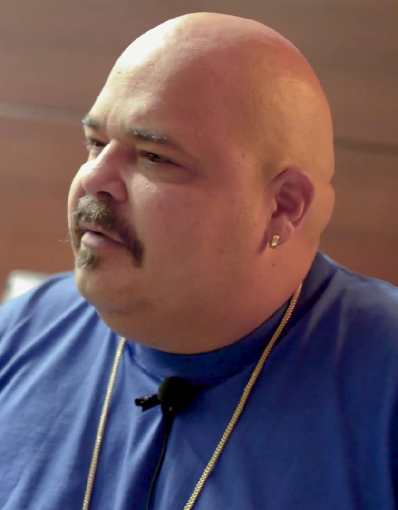

DJ Sneak [Audio]: Bringing Berlin home to Chicago



STREAMING AUDIO INTERVIEW
In the early 80s, Carlos Sosa AKA DJ Sneak relocated from the island of Puerto Rico to the underground hub that is Chicago. He brought with him a strong Latin influence that he’d quickly fuse with what was already going on in the ‘windy city’, an approach that eventually placed DJ Sneak alongside luminaries like Derrick Carter and Mark Farina as one of the leading pioneers of the Chicago house sound. Imagine the fuss then, when news trickled back that Sneak had gone back-to-back behind the decks with minimal techno powerhouse Ricardo Villalobos at the Sunwaves Festival in Romania earlier this year. It was a ‘meeting of the minds’ from leaders of two completely different scenes, and it cause quite a stir.
In the end the pair played for over three hours together, with Sneak continuing on for another hour to wrap up the party. “It was definitely an amazing thing to see, because of the respect level we have for each other,” Sneak told ITM. “We combined our music together, and I wasn’t playing my usual deep house stuff, I was playing more tribally and energetic. And on the same note Ricardo was still playing his minimal stuff, but he was also playing a lot more Latin – and the combination was unreal.”
Since that infamous gig earlier this year the Chicago/Berlin crossover movement has been picking up some serious steam, and Sneak is happy to help bring the German sound back home to its roots in the US. “I’m looking forward to doing more shows together, but more so I feel like I’m bringing the interest back to Chicago house,” Sneak told ITM. “I’ve been hooking up with different people recently, the Berlin guys who do minimal, but really… They’re doing house without the funk. When they come to me put the funk in it, and it becomes Chicago house,” he laughs.
While the world’s attention may have briefly turned away from Chicago and towards the sweaty clubs of Berlin, Sneak is committed to bringing the two worlds together. “I’m not going anywhere, I never went anywhere,” he insists. “You can hear a new Sneak in my music, but with an old-school feeling behind it.” ITM’s Angus Paterson talks to DJ Sneak about bringing house home, and keeping the music real.
DJ Sneak will be playing at Global Gathering later this month, remember to head to inthemix.com.au/globalgathering for all the latest info on the tour, including interviews, news, DJ mixes, videos and more.
DJ Sneak tour dates:
Sat Nov 22 – Global Gathering, Melbourne
Sat Nov 22 – Harbourlife, Sydney
Sun Nov 23 – Global Gathering, Perth
Sat Nov 29 – Global Gathering, Brisbane
Sun Nov 30 – Global Gathering, Sydney
And while you’re at it, check out this footage of Sneak and Villalobos behind the decks together at their epic festival gig earlier this year…